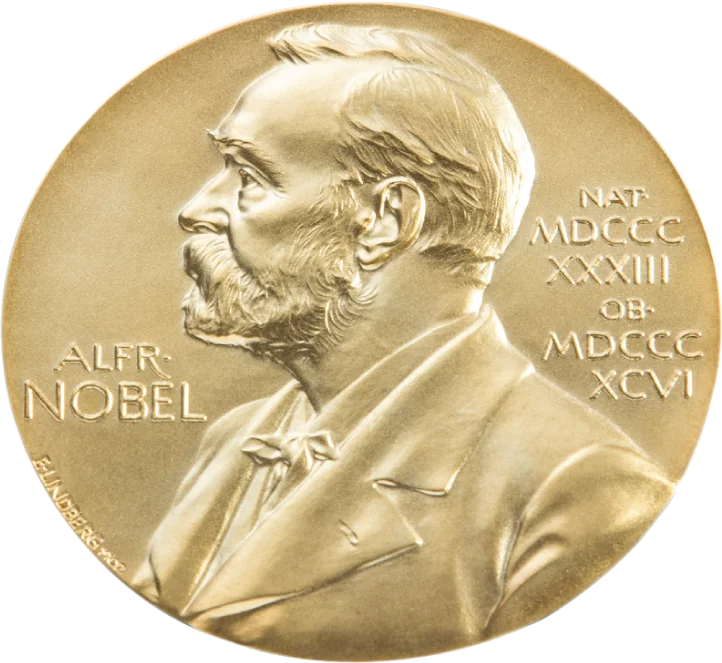
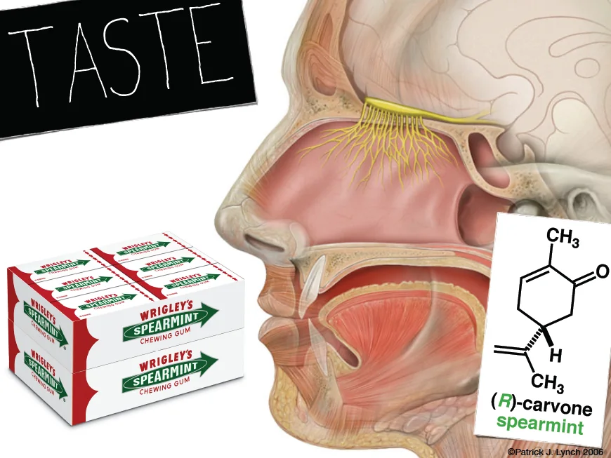
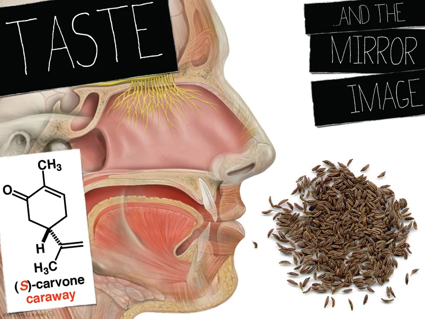
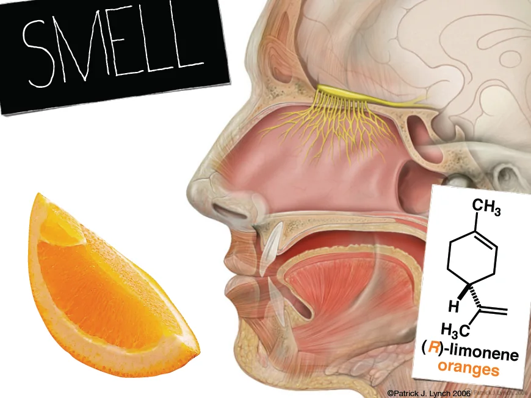
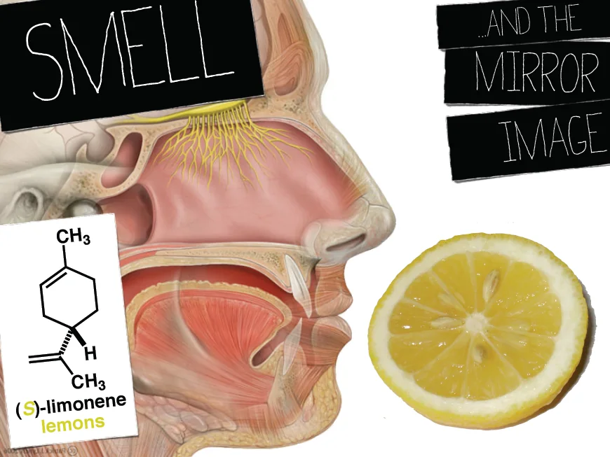
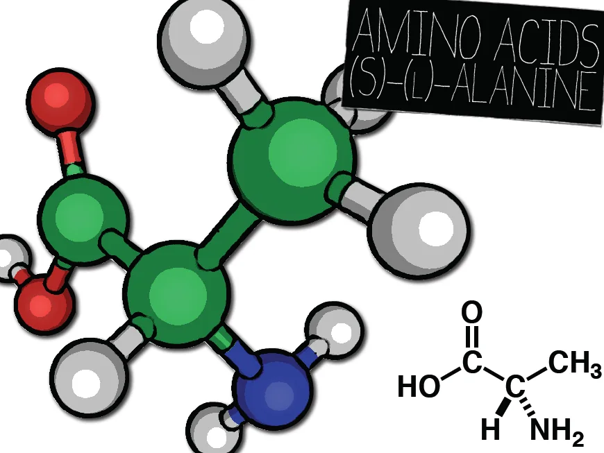
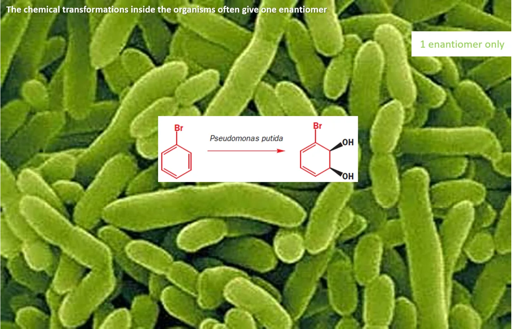
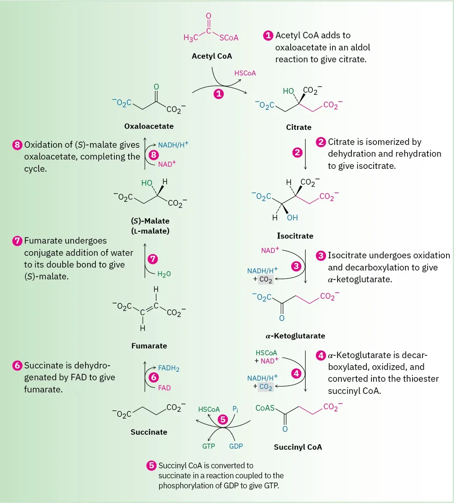
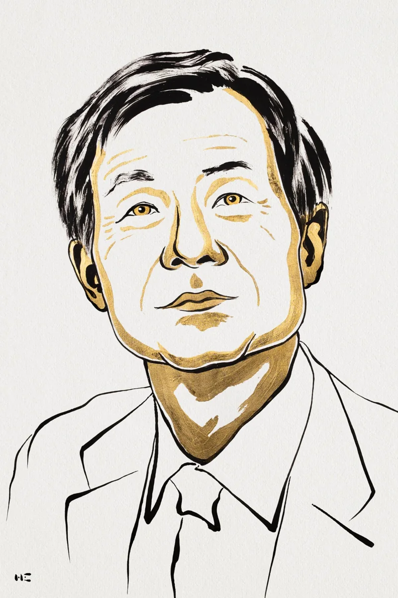
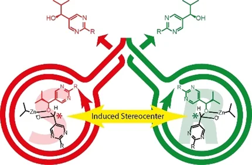

Nobel Prize in Chemistry · 2026
How two chemists helped explain why nature picks one “hand”
Rahman Shah Zaib Saleem
Department of Chemistry and Chemical Engineering, SBASSE, LUMS
Announced 7 October 2026 · Royal Swedish Academy of Sciences
Disclaimer: Some images on this page were taken from the internet and are used for educational, non-commercial purposes only. All rights remain with their respective owners.

Warm-up
Hold up both hands. Put your palms together: they match like a reflection. Now try to lay one exactly on top of the other.
1 · Palms together: they match like a reflection.
Part 1 · Where it began
Same atoms. Same connections. But arranged as mirror images.
Your turn
Drag the right molecule to turn it, then slide it onto its mirror image. Can you make all four groups line up?
—
However you turn it, at most two groups line up. The two molecules are mirror images that cannot be superimposed.
We’ll call them left-handed and right-handed molecules: a pair of enantiomers.
The phenomenon is called chirality, from the Ancient Greek word χείρ (kheír), which means “hand”.
Part 1 · Where it began · 1848
1 · CRYSTALLISE
The sodium ammonium salt of optically inactive racemic acid gives two kinds of crystal, with small facets that are mirror images.
2 · SORT BY HAND
Using a lens and tweezers, Pasteur separated the left-faceted crystals from the right-faceted ones.
3 · POLARIMETER
In solution, the two sets rotate polarised light equally, in opposite directions. The (+) set matched natural tartaric acid from wine.
Conclusion
A 1 : 1 mix rotates nothing: racemic acid is two mirror-image forms, so the molecules themselves must be handed.
Part 1 · Chirality in nature
One molecule comes in two mirror versions, and they smell completely different. Pick a molecule, then flip its hand.




spearmint
(R)-carvone
Same atoms, a different smell, because the smell sensors in your nose are handed too.
Part 1 · Good or bad
The bad
Late 1950s: thalidomide, a medicine for morning sickness, contained both mirror forms. One calmed nausea; the other is linked to serious birth defects.
Twist: in the body its two forms switch into each other, so one hand alone wouldn’t have made it safe.
0+
babies affected around the world
Lesson: always test each hand separately.
Part 1 · Chirality in nature

Your body builds its proteins from left-handed building blocks.
The double helix always twists to the right.
The vast majority of molecules in nature have this handedness, called homochiral (“same hand”).
Part 1 · Good and bad
?
?
Part 1 · Making chiral molecules
Scroll to follow a cyanide ion attacking acetaldehyde.
The C=O carbon of acetaldehyde is flat: the carbon, oxygen, hydrogen and CH₃ group all lie in one plane. It has a top face and a bottom face, and they look exactly the same.
A cyanide ion (CN⁻) can attack the carbon from the top face…
…or from the bottom, just as easily. There is no preference.
Each attack gives a carbon with four different groups (CN, OH, CH₃ and H), so the product is chiral. Top and bottom attack give the two mirror images.
Both faces are equally likely, so we get exactly half of each: a racemic mixture.
Part 1 · The mystery
Add an enantiomerically pure chiral catalyst and the symmetry breaks.
* = the product is chiral · 99 : 1 is an illustrative ratio
Part 1 · The mystery
Inside living organisms, chemical transformations often give one enantiomer only. Some chemists claimed that chiral chemistry was unique to life.


Citric acid cycle figure: Chemistry LibreTexts.
Part 1 · The mystery
A chemical reaction that fulfils all these conditions can result in homochirality:
There is a chiral catalyst and an asymmetric reaction.
The formation of one mirror image is somehow enhanced and the other dampened.
The chemical reaction forms the catalyst itself.
Part 2 · The prize
The official reason
“for the discovery of non-linear effects and autocatalysis in asymmetric organic synthesis”
95 · France · Université Paris-Sud
non-linear effects

76 · Japan · Tokyo University of Science
autocatalysis
7 Oct
2026 · announced in Stockholm
12 million
Swedish kronor (about $1.2 million), shared
95 & 76
the winners’ ages
Laureate portraits © Nobel Prize Outreach.
Part 2 · The prize
Age at the time of the award: Physics, Chemistry and Physiology or Medicine.
| Field | Youngest laureate | Oldest laureate |
|---|---|---|
| Physics | Lawrence Bragg 25 yrs, 1915 X-ray crystallography (shared with his father) | Arthur Ashkin 96 yrs, 2018 Optical tweezers |
| Chemistry | Frédéric Joliot 35 yrs, 1935 New radioactive elements (shared with Irène Joliot-Curie) | John B. Goodenough 97 yrs, 2019 Lithium-ion batteries; oldest laureate in any category |
| Physiology or Medicine | Frederick Banting 32 yrs, 1923 Discovery of insulin | Peyton Rous 87 yrs, 1966 Tumour-inducing viruses |
2001
William S. Knowles and Ryoji Noyori, “for their work on chirally catalysed hydrogenation reactions”; K. Barry Sharpless, “for his work on chirally catalysed oxidation reactions”
2021
Benjamin List and David W.C. MacMillan, “for the development of asymmetric organocatalysis”
2026
Henri B. Kagan and Kenso Soai, “for the discovery of non-linear effects and autocatalysis in asymmetric organic synthesis”
Part 3 · Kagan’s discovery
Ti(Oi-Pr)₄ / DET / H₂O
t-BuOOH, CH₂Cl₂, −20 °C
Metal atoms normally interact with several molecules simultaneously. Kagan therefore assumed that the catalyst’s metal attracted at least two of the chiral molecules during the reaction, and he used different ratios of the two hands of the catalyst.
What if the chiral catalyst is not pure — say only 75% right-handed? You would naturally expect a 75% right-handed product.
Catalyst
Product: what one would naturally expect
Kagan showed that this is not what happens.
Part 3 · Kagan’s discovery · Interactive
The metal M picks up two ligands at random, giving R+R, R+S and S+S catalysts. Move the sliders and watch the product.
75% R, 25% S = 50% ee
2 · Random pairs on M
3 · What reacts
80% ee
linear prediction: 50% ee
Model: ligands pair at random; R+R gives only the right-handed product, S+S only the left; the mixed R+S catalyst gives both equally. This is Kagan’s ML₂ model with random pairing.
Part 3 · Kagan’s discovery
He had found a way to enhance the formation of one enantiomer of the product.
Catalyst: 75% right
If it were linear: 75% right
What Kagan found: about 90% right
In 1986, Kagan described no fewer than three different asymmetric reactions that displayed what chemists call non-linear effects.
This was a historic breakthrough, and many chemists began to explore this new phenomenon.
One of them, Kenso Soai, forged the final link in the chain of ideas: a reaction in which the catalyst forms itself, in an autocatalytic process.
Part 4 · Soai’s autocatalysis
Scroll through the Soai reaction.
50 : 50
57% ee
78.5 : 21.5
↻ the product catalyses its own formation
A pyrimidine aldehyde reacts with diisopropylzinc. Neither is chiral, and no chiral catalyst is added.
The zinc alkoxide product has a new chiral centre, so without any bias both mirror images should form equally.
Soai added a small amount of the product with an extremely small excess of one hand: only 0.00005% ee.
After the reaction, the product had 57% ee (78.5 : 21.5). The product catalyses its own formation, so a tiny imbalance in the seed was amplified.

The right-handed product helps make more right-handed product, and the left-handed product helps make more left-handed product. That is asymmetric autocatalysis.
Part 4 · Soai’s autocatalysis
SEED
0.00005%
ee
RUN 1
0%
ee
RUN 2
0%
ee
RUN 3
>99.5%
ee
It was the first time anyone had successfully created chirality from a non-chiral combination of molecules since the dawn of life.
The enantiomer he obtained at the end depended on what happened by chance at the start of the reaction.
Start a reaction with no seed at all. A random flicker decides which hand gets ahead, and self-copying does the rest.
Illustration only: a simple amplification curve, not Soai’s measured kinetics.
Part 5 · Why it matters
a balanced chemical soup
chance, light or a crystal
by copying chemistry
building blocks that match
The Soai reaction is artificial and different from the chemistry of life, but it gives some clues.
Medicines, agricultural chemicals, flavours, scents.
Understanding how they really work.
The story so far
1848
Pasteur
discovers mirror-image crystals
1953
Frank
predicts self-copying could explain life’s hand
1986
Kagan
impure catalyst, purer product
1995
Soai
a molecule that copies its own hand
2026
Nobel Prize
shared by Kagan and Soai
From spotting mirror-image crystals to controlling which hand wins.
Wrap-up
1
and the hand changes smells, medicines and life.
2
A small imbalance in a catalyst can be amplified.
3
A tiny accident can snowball into a one-handed world.
Questions?